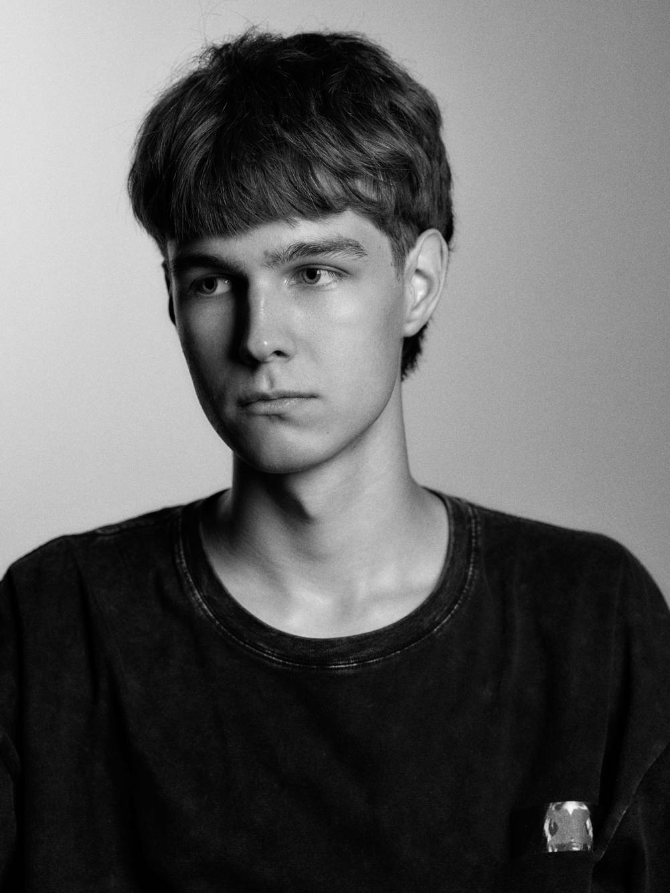

Меня зовут Даниил, я фотограф из Самары. Занимаюсь фотографией уже несколько лет.
Снимаю портреты, репортажи и различные события. Всегда открыт интересным идеям.
Если вам нравится то, что я снимаю, — буду рад поработать вместе.